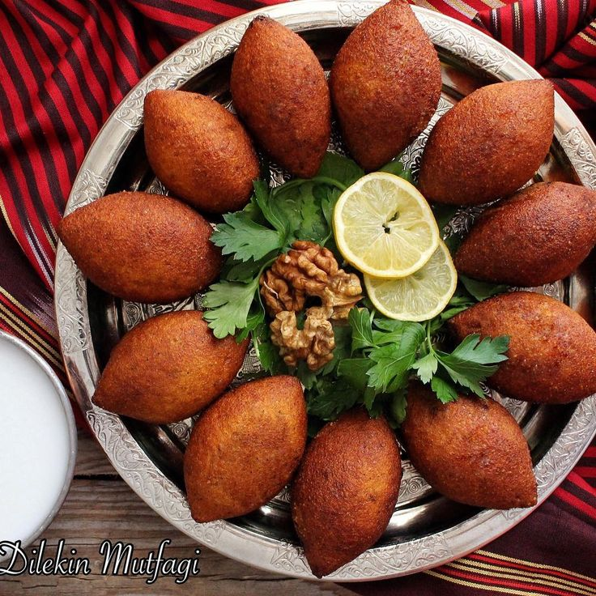
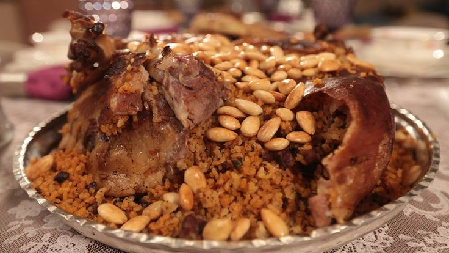
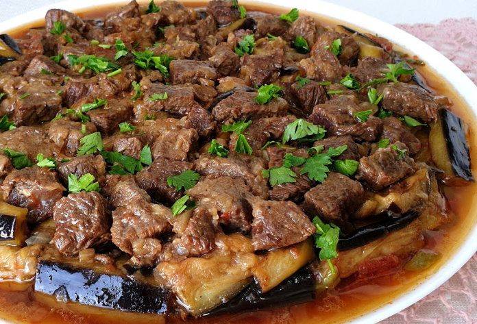

Diyarbakır Mutfak Kültürü
Mezopotamya'nın Lezzet Hazinesi

Diyarbakır, binlerce yıllık tarihiyle olduğu kadar zengin mutfak kültürüyle de dikkat çeker. Et ağırlıklı yemekleri, baharatlı tarifleri ve yöresel pişirme yöntemleriyle unutulmaz tatlar sunar.
Güneydoğu Anadolu’nun köklü yemeklerinden olan içli köfte, kaburga dolması ve meftune Diyarbakır’ın sofrasını yansıtır.
- Et ve baharat ön planda
- Geleneksel pişirme yöntemleri
- Taze ve yöresel malzemeler
- Lezzetli ev yemekleri
Öne Çıkan Yemekler ve Mekan Önerileri

İçli Köfte
Dışı ince bulgur, içi kıyma, ceviz ve baharatla hazırlanan, kızartılmış veya haşlanmış olarak sunulan geleneksel lezzet.
Nerede Yenir?
- 📍 Sur İçli Köftecisi
- 📍 Meşhur Diyarbakır Sofrası
- 📍 Kadayıfçı Sait Usta

Kaburga Dolması
İç pilavla doldurulmuş kuzunun kaburga kısmının fırınlanarak pişirilmesiyle hazırlanan görkemli bir davet yemeği.
Nerede Yenir?
- 📍 Kaburgacı Selim Amca
- 📍 Diyar Sofrası
- 📍 Hacı Usta

Meftune
Et, patlıcan, soğan ve sarımsağın ekşi tatlarla buluştuğu, Diyarbakır’a özgü nefis bir tencere yemeği.
Nerede Yenir?
- 📍 Sur Meftunecisi
- 📍 Meftuneci Kadınlar
- 📍 Diyarbakır Lokantası